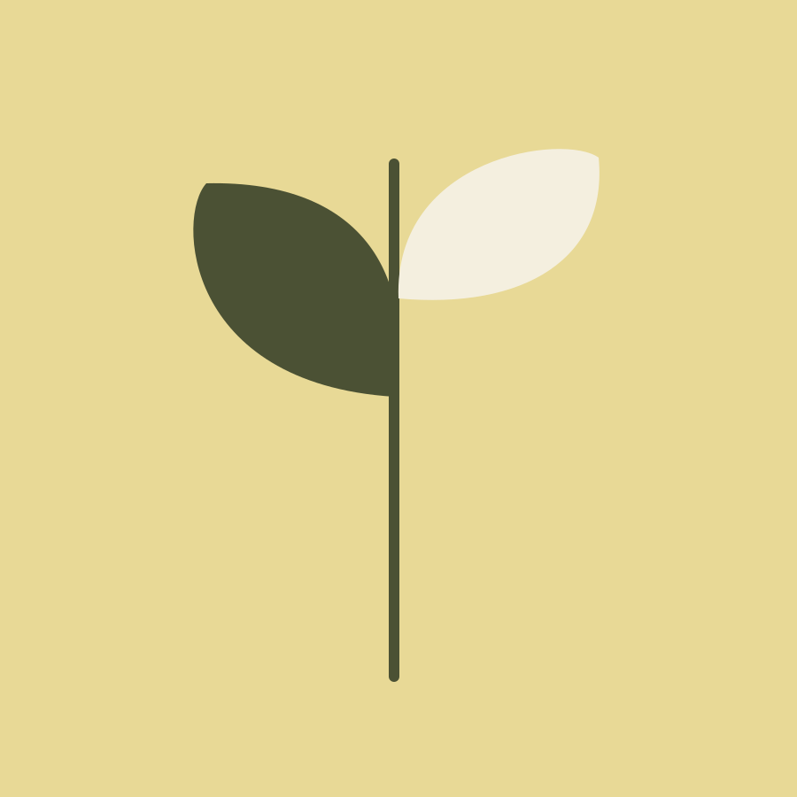
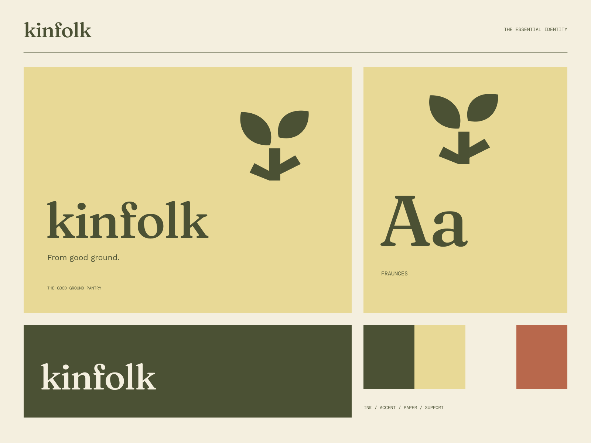

01
Seasonal by nature
A collection that follows what is good right now.
A SEASONAL PANTRY / A SHARED TABLE
From good ground. Grown with care. Shared generously.

A coherent little world
Grown with care. Shared generously. From good ground.
01
A collection that follows what is good right now.
02
A closer connection to the people and places that grow your food.
03
Simple, generous things for the way you actually eat.

The point of view
Hand-cut produce silhouettes, seed diagrams, honest food labels, and a warm bookish serif. Seasonal abundance sits inside orderly, useful information design.